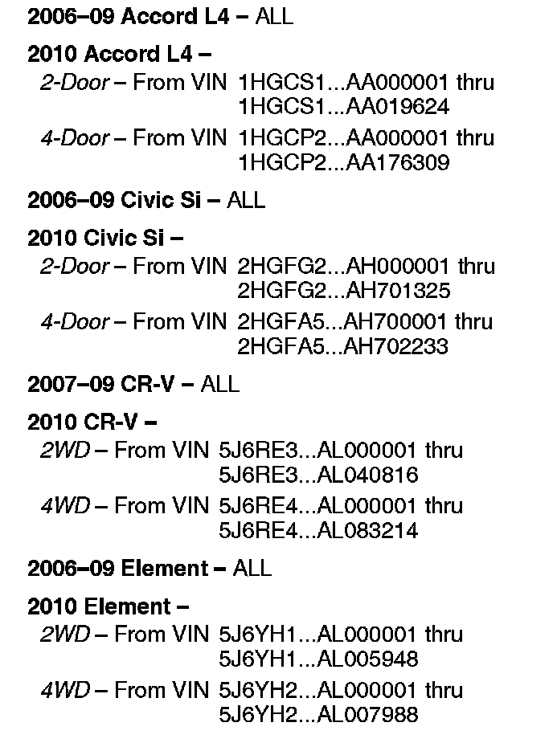
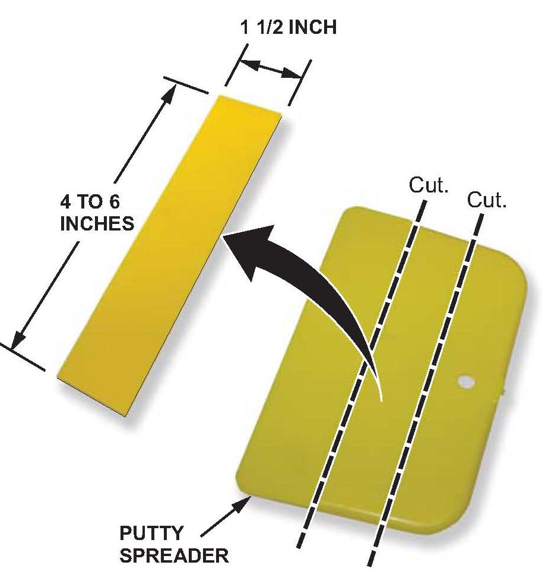
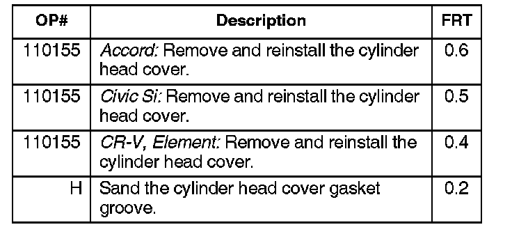
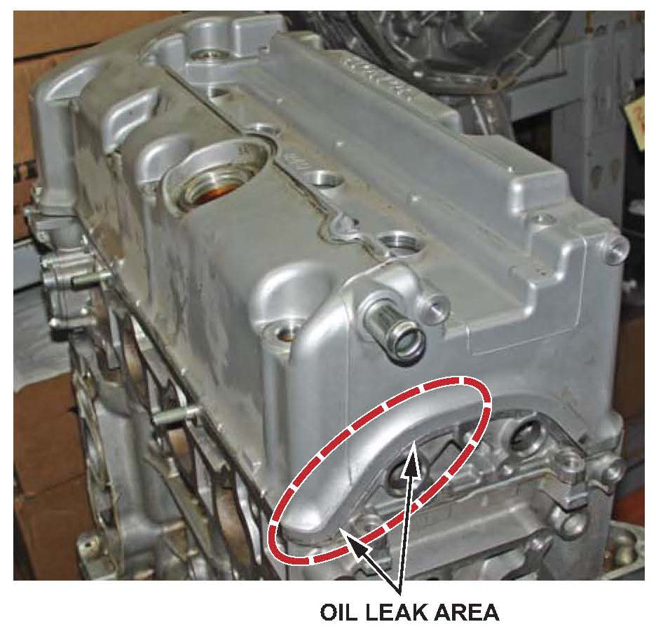
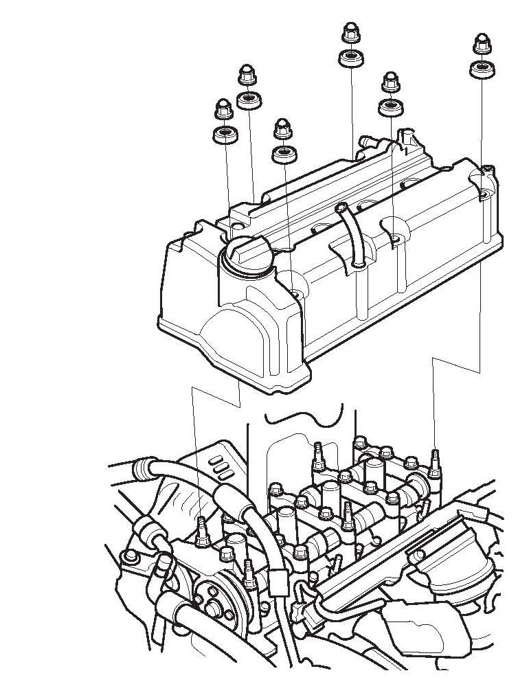
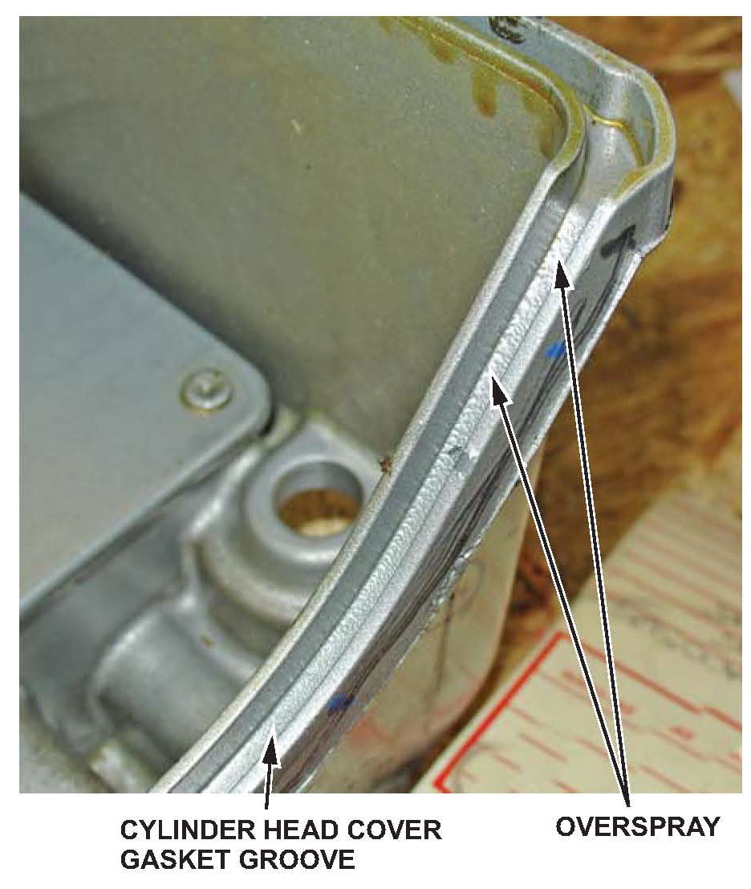
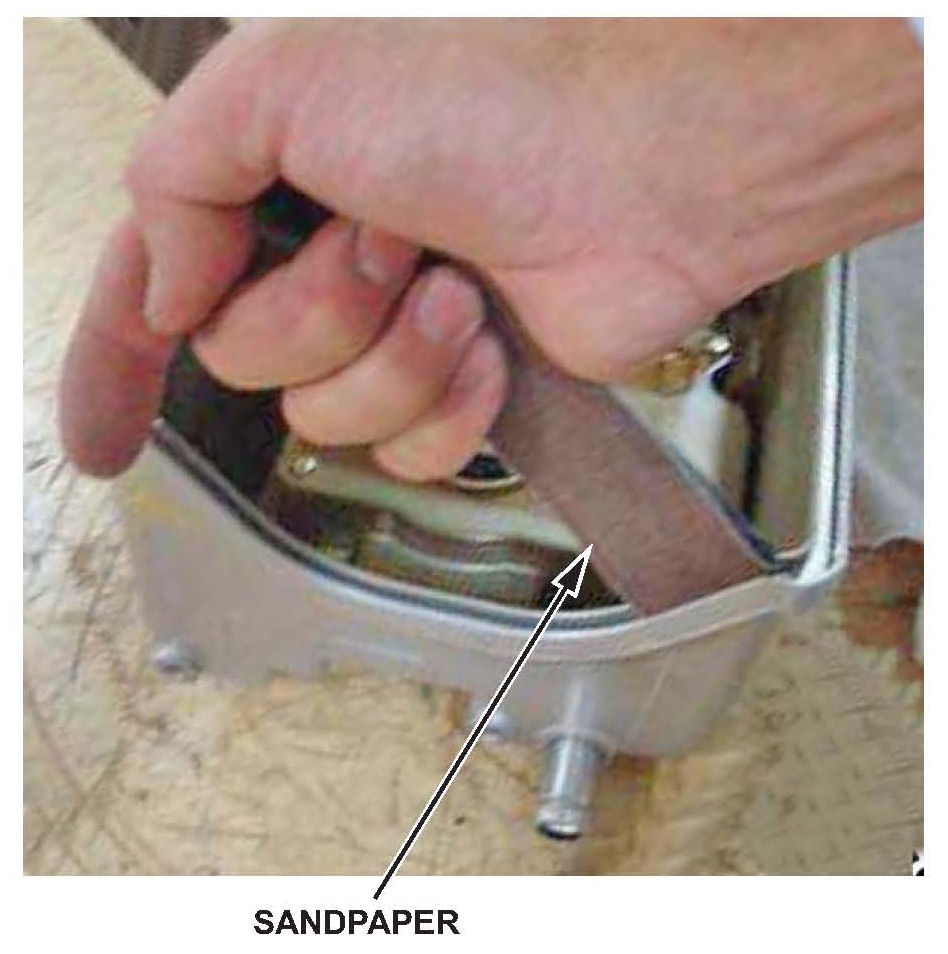

Engine - Oil Leaks At The Cylinder Head Cover
10-075November 24, 2010
Applies To:
See VEHICLES AFFECTED
Engine Oil Leak at the Cylinder Head Cover
SYMPTOM
The cylinder head cover is leaking engine oil.
PROBABLE CAUSE
There is paint overspray in the gasket groove of the cylinder head cover.

VEHICLES AFFECTED
CORRECTIVE ACTION
Remove the cylinder head cover, and sand away the paint overspray.
REQUIRED MATERIALS
Liquid Gasket: P/N 08717-0004
TOOL INFORMATION

1/8 inch thick plastic putty spreader, cut to the dimensions below (commercially available).
WARRANTY CLAIM INFORMATION

The normal warranty applies.
Failed Part: P/N 12310-RWC-A00
Defect Code: 08103
Symptom Code: 05101
Skill Level: Repair Technician
DIAGNOSIS

Is there engine oil leaking from the cylinder head cover in the area marked below?
Yes - Go to REPAIR PROCEDURE.
No - This service bulletin does not apply. Continue with normal troubleshooting to find the source of the engine oil leak.
REPAIR PROCEDURE
1. Remove the cylinder head cover.
^ Refer the appropriate service manual, or

^ Online, enter keywords HEAD COVER, and select Cylinder Head Cover Removal from the list.
2. Check the gasket groove.

Is there paint overspray in the cylinder head cover gasket groove?
Yes - Go to the next step.
No - This service bulletin does not apply. Continue with normal troubleshooting to find the source of the engine oil leak.

3. Wrap a 1-1/2-inch-wide strip of 120 grit sandpaper around the putty spreader tool. Insert it into the cylinder head cover gasket groove where there is paint overspray. Sand the groove until the paint overspray is removed.
4. Clean the cylinder head cover and the gasket. Replace the gasket if needed.
5. Reinstall the cylinder head cover using the original gasket, unless the original was damaged.
^ Refer the appropriate service manual, or
^ Online, enter keywords HEAD COVER, and select Cylinder Head Cover Installation from the list.
6. Wait for at least 3 hours after installing the cylinder head cover, then start the engine, and check for leaks.

Disclaimer